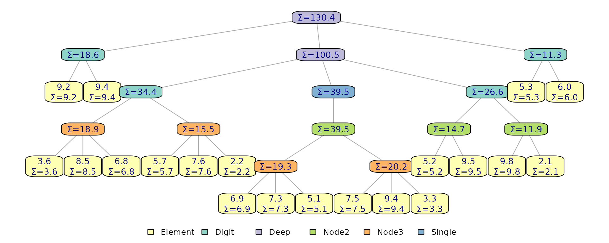

Every immutables structure is built on finger trees annotated with
monoids — cached summaries that support O(log n) search and
split. This vignette covers the developer API for defining custom
monoids, using predicate-based locate and split operations, and
validating tree invariants. These operations work uniformly across
flexseq, ordered_sequence,
priority_queue, and interval_index.
Measures and monoids
A monoid is defined by three pieces: a binary combining function
f, an identity value i, and a
measure function that maps a single leaf entry to its
measure value. The combining function must be associative
(f(a, b) == f(b, a)), and the identity must satisfy
f(i, x) == x and f(x, i) == x.
Measure values typically represent something you would want to aggregate over a subset of elements, with different measures and aggregations resulting in unique properties.
When operating on a flexseq, you can think of a monoid’s
f as being applied left-to-right (a left fold),
accumulating measure values at each element. The calculation for the
first element also uses f, which is where i is
used, as the other input.
elements: x1, x2, x3
measures: m1, m2, m3, ...
monoid-accumulated measures (infix notation):
v1 = i %f% m1
v2 = (i %f% m1) %f% m2 = v1 %f% m2
v3 = ((i %f% m1) %f% m2) %f% m3 = v2 %f% m3
...This left-to-rightness is only well defined for flexseq
(using element order defined by the user in construction),
ordered_sequence (always ordered by key), and
interval_index (always ordered by interval start). Priority
queue element order is maintained internally with new elements being
added on the right, not in priority order. There may still be uses for
monoids that aggregate priority values. This is because we can compute
an aggregate over any subsequence, not just prefixes.
Internally elements are stored as leaf nodes in a tree structure, and
aggregating measures upward can be done purely recursively, and cached
for fast access at any level.
This monoid keeps track of the sum of values:
sum_monoid <- measure_monoid(
f = `+`,
i = 0,
measure = function(el) el
)Next we attach it to a structure with add_monoids(),
which accepts a named list of monoids. We can pass
show_custom_monoids = TRUE to print() to see
this new information:
set.seed(42)
task_times <- runif(20, min = 1, max = 10) |>
round(digits = 1) |>
as_flexseq()
x <- add_monoids(task_times, list(sum = sum_monoid))
print(x, show_custom_monoids = TRUE)
#> Unnamed flexseq with 20 elements.
#> Custom monoids + measures:
#> sum: 130.4 (aggregate)
#>
#> Elements:
#>
#> [[1]]
#> [1] 9.2
#> sum measure: 9.2
#>
#> [[2]]
#> [1] 9.4
#> sum measure: 9.4
#>
#> ... (skipping 16 elements)
#>
#> [[19]]
#> [1] 5.3
#> sum measure: 5.3
#>
#> [[20]]
#> [1] 6
#> sum measure: 6The plot_structure() functions visualizes the internal
tree layout. Passing a function to node_label lets us
render both leaf values and cached structural measures produced by
monoids:
plot_structure(x, node_label = function(node) {
if(node$type == "Element") sprintf("%.1f\nΣ=%.1f", node$element, node$measures$sum)
else sprintf("Σ=%.1f", node$measures$sum)
})
The tree now caches cumulative sum annotations at every internal
node, enabling
search by accumulated sum. Setting overwrite = TRUE
replaces an existing monoid with the same name.
Each structure type reserves certain monoid names for internal use
(e.g. .size, .named_count,
.pq_min). Attempting to add a monoid with a reserved name
will error.
Leaf entry contract
The provided measure function receives a
structure-specific entry, not just the stored value. The entry
shapes are:
-
flexseq: the stored element directly. -
ordered_sequence:list(value, key). -
priority_queue:list(value, priority). -
interval_index:list(value, start, end).
This means a monoid that works on one structure type may not work on
another. Here is a monoid that sums keys on an
ordered_sequence:
key_sum <- measure_monoid(`+`, 0L, function(entry) as.integer(entry$key))
os <- as_ordered_sequence(c("alice", "bob", "carol"), keys = c(10, 20, 30))
os <- add_monoids(os, list(key_sum = key_sum))
print(os, show_custom_monoids = TRUE)
#> Unnamed ordered_sequence with 3 elements.
#> Custom monoids + measures:
#> key_sum: 60 (aggregate)
#>
#> Elements (by key order):
#>
#> [[1]] (key 10)
#> [1] "alice"
#> key_sum measure: 10
#>
#> [[2]] (key 20)
#> [1] "bob"
#> key_sum measure: 20
#>
#> [[3]] (key 30)
#> [1] "carol"
#> key_sum measure: 30Locating and splitting by predicate
Predicate-based operations scan accumulated monoid values
left-to-right and find the first point where a predicate transitions
from FALSE to TRUE. The predicate must be
monotonic: once it returns TRUE, it must stay
TRUE for all subsequent accumulated values. This is what
enables the
search for a single split point.
locate_by_predicate() finds the first element
where the predicate fires, without splitting the tree. With
include_metadata = TRUE it returns additional scan
information. The predicate function is applied to accumulated measure
values for a given monoid name; here we find the first element where the
accumulated sum exceeds
.
loc <- locate_by_predicate(x, function(v) v > 25, "sum", include_metadata = TRUE)
str(loc)
#> List of 3
#> $ found : logi TRUE
#> $ value : num 8.5
#> $ metadata:List of 4
#> ..$ left_measure : num 22.2
#> ..$ hit_measure : num 30.7
#> ..$ right_measure: num 84.2
#> ..$ index : int 4The $found entry indicates that a node where the
predicate fires was found; if this is false the predicate is
FALSE for all elements through the end. The
$value entry gives the measure of the node where the
predicate turned TRUE.
The optional metadata includes left_measure (accumulated
value before the match), hit_measure (the matched element’s
own accumulated measure), right_measure (accumulated value
of everything after), and index (1-based position). In this
example index 4 is where the first time where the accumulated sum is
greater than 25, which we can verify in the plot above
(,
adding in
brings the sum to
).
split_by_predicate() splits the structure at the
predicate point, returning $left and $right.
The matched element is the first element of $right:
s <- split_by_predicate(x, function(v) v > 25, "sum")
s$left
#> Unnamed flexseq with 3 elements.
#>
#> Elements:
#>
#> [[1]]
#> [1] 9.2
#>
#> [[2]]
#> [1] 9.4
#>
#> [[3]]
#> [1] 3.6
s$right
#> Unnamed flexseq with 17 elements.
#>
#> Elements:
#>
#> [[1]]
#> [1] 8.5
#>
#> [[2]]
#> [1] 6.8
#>
#> ... (skipping 13 elements)
#>
#> [[16]]
#> [1] 5.3
#>
#> [[17]]
#> [1] 6split_around_by_predicate() is similar but extracts the
matched element into a separate $value field:
sa <- split_around_by_predicate(x, function(v) v > 25, "sum")
sa$left
#> Unnamed flexseq with 3 elements.
#>
#> Elements:
#>
#> [[1]]
#> [1] 9.2
#>
#> [[2]]
#> [1] 9.4
#>
#> [[3]]
#> [1] 3.6
sa$value
#> [1] 8.5
sa$right
#> Unnamed flexseq with 16 elements.
#>
#> Elements:
#>
#> [[1]]
#> [1] 6.8
#>
#> [[2]]
#> [1] 5.7
#>
#> ... (skipping 12 elements)
#>
#> [[15]]
#> [1] 5.3
#>
#> [[16]]
#> [1] 6Both split variants accept an optional accumulator
argument to start scanning from a value other than the monoid identity.
split_at() is a convenience wrapper that splits by position
using the built-in .size monoid (which counts nodes; each
leaf node’s measure is 1 and it uses the sum
operator):
split_at(x, index = 5)
#> $left
#> Unnamed flexseq with 4 elements.
#>
#> Elements:
#>
#> [[1]]
#> [1] 9.2
#>
#> [[2]]
#> [1] 9.4
#>
#> [[3]]
#> [1] 3.6
#>
#> [[4]]
#> [1] 8.5
#>
#>
#> $value
#> [1] 6.8
#>
#> $right
#> Unnamed flexseq with 15 elements.
#>
#> Elements:
#>
#> [[1]]
#> [1] 5.7
#>
#> [[2]]
#> [1] 7.6
#>
#> ... (skipping 11 elements)
#>
#> [[14]]
#> [1] 5.3
#>
#> [[15]]
#> [1] 6Built-in monoids in action
As described by Hinze
and Paterson, this monoid + predicate pattern is remarkably
flexible. The priority_queue and
ordered_sequence types for example are not actually
separate data structures, but monoid-annotated flexseq
structures plus thin wrappers that invoke
locate_by_predicate() and friends with the right predicate.
The same primitives introduced above power every peek_*,
pop_*, and bound query in the package. (Interval indices
also follow these patterns, but are more complex than would be useful to
review here.)
Priority queue: .pq_min and .pq_max
Priority queues store elements in insertion order, not priority
order, so a linear scan would be the only way to find the min-priority
element without some extra bookkeeping. That bookkeeping is
.pq_min (and its twin .pq_max): a monoid whose
cached value at every internal node is the smallest priority anywhere in
that subtree, combined by picking the side with the smaller priority
(left-most on ties, which preserves first-in first-out for equal
priorities).
pop_min(q) then works in three lines of logic: read the
root aggregate as the target priority, form the predicate “has
the accumulated subtree absorbed a slot with this priority yet?”, and
hand it to split_around_by_predicate() over
.pq_min. The descent uses cached subtree aggregates to
prune branches whose min is a different value, so the whole thing runs
in
even though the leaves themselves are not in priority order.
Ordered sequence: .oms_max_key
An ordered sequence is a flexseq whose elements are kept
sorted by key. Its built-in .oms_max_key monoid caches the
largest key in each subtree, combined by picking the larger of its two
inputs.
Because the sequence is already key-ordered, the accumulated max-key
is monotonically non-decreasing left-to-right, so a predicate like “is
the running max at least my query?” transitions from FALSE
to TRUE exactly once at the correct location. The
lower_bound() function wires that predicate into
locate_by_predicate() on .oms_max_key and
returns the first element with key at or above the target;
peek_key(), pop_key(),
count_between(), and the rest all follow the same template
with different predicate shapes and splitting/concatenating.
In practice, .pq_min, .oms_max_key and
other measures are stored as lists, containing the measure of interest
(min priority value, max key value) as well as other helper information
such as the key type to ensure consistent comparisons. The identity
i and associative combining function f operate
on list-based measures of the right shape.
Example: DNA prefix search
Custom monoids and predicate splits combine naturally for index-style queries. Here we build a persistent subsequence index over a DNA string and use it to find all positions where a query pattern occurs as a prefix.
sequence <- "ACGCGCTCGCGCATAGTCGCGCCTG"
query <- "CGCGC" # goal: find indices where query occursThe idea is to store each position in the string as a value, keyed on a subsequence long enough to contain the query (we’ll keep 10-letter subsequences):
key: ACGCGC..., value = 1
key: CGCGCT..., value = 2
key: GCGCTC..., value = 3
...However, ordered sequences actually store their values in key-order:
key: ACGCGC..., value = 1
key: AGTCGC..., value = 15
key: ATAGTC..., value = 13
...Since they are in key-order, matches will be found in a run: all subsequences starting with the query will be next to each other. To extract them we just need to find the first one (a splitting operation over a monoid), and the last (another splitting operation over a monoid).
First we define a monoid that tracks the maximum key (subsequence
string) seen so far. The built-in .oms_max_key monoid
already tracks this, but we define our own to illustrate the pattern.
Recall from above that the measuring function takes a list with shape
list(value = ..., key = ...) when used with an
ordered_sequence; in this case we just need it to return
the key as the measure.
We can add the monoid to an empty tree, and values for new entries will be automatically computed on addition/removal etc.
max_seq <- measure_monoid(max, i = -Inf, measure = function(entry) entry$key)
subseqs <- ordered_sequence()
subseqs <- add_monoids(subseqs, list(max_seq = max_seq))Next we index every position in the DNA string by its length-10 subsequence, inserting them into the structure:
for(i in 1:nchar(sequence)) {
subseq <- substr(sequence, i, i + 10)
subseqs <- insert(subseqs, i, key = subseq)
}
subseqs
#> Unnamed ordered_sequence with 25 elements.
#>
#> Elements (by key order):
#>
#> [[1]] (key ACGCGCTCGCG)
#> [1] 1
#>
#> [[2]] (key AGTCGCGCCTG)
#> [1] 15
#>
#> ... (skipping 21 elements)
#>
#> [[24]] (key TCGCGCCTG)
#> [1] 17
#>
#> [[25]] (key TG)
#> [1] 24Now we can search for all subsequences starting with the query.
First, split to find the first entry where the measure is
>= the query:
first_split <- split_by_predicate(subseqs, function(m) query <= m, "max_seq")
first_split$left
#> Unnamed ordered_sequence with 7 elements.
#>
#> Elements (by key order):
#>
#> [[1]] (key ACGCGCTCGCG)
#> [1] 1
#>
#> [[2]] (key AGTCGCGCCTG)
#> [1] 15
#>
#> ... (skipping 3 elements)
#>
#> [[6]] (key CGCATAGTCGC)
#> [1] 10
#>
#> [[7]] (key CGCCTG)
#> [1] 20
first_split$right
#> Unnamed ordered_sequence with 18 elements.
#>
#> Elements (by key order):
#>
#> [[1]] (key CGCGCATAGTC)
#> [1] 8
#>
#> [[2]] (key CGCGCCTG)
#> [1] 18
#>
#> ... (skipping 14 elements)
#>
#> [[17]] (key TCGCGCCTG)
#> [1] 17
#>
#> [[18]] (key TG)
#> [1] 24An empty $right indicates no matches (all measures are
less than the query). If it’s not empty, but the first measure in
$right does not start with the query, then there again no
matches (the key is between the left and right but doesn’t match). We
can use the get_measures() function to return a
flexseq of measure values by name and index with
[[1]] to get the first measure.
If the first key in $right does start with the
query, then there is at least one match, and all matches would be in
$right. We can split again to find where matching keys end
with a different predicate, one that fires on the first measure that is
strictly greater than the query and no longer starts
with it (resulting in the index of the first non-match in the run).
if(length(first_split$right) > 0) {
right_measures = get_measures(first_split$right, "max_seq")
first_measure = right_measures[[1]]
if(startsWith(first_measure, query)) {
second_split <- split_by_predicate(
first_split$right,
function(m) query < m & !startsWith(m, query),
"max_seq"
)
matches <- second_split$left
}
}
matches
#> Unnamed ordered_sequence with 3 elements.
#>
#> Elements (by key order):
#>
#> [[1]] (key CGCGCATAGTC)
#> [1] 8
#>
#> [[2]] (key CGCGCCTG)
#> [1] 18
#>
#> [[3]] (key CGCGCTCGCGC)
#> [1] 2Finally we can extract the original string positions from the matching entries:
Validation helpers
validate_tree() checks structural invariants (monoid
consistency, node structure) across the entire tree.
validate_name_state() verifies that a tree is either fully
unnamed or fully named with unique, non-empty names. Both are
and intended for debugging and tests.
validate_tree(x)
validate_name_state(flexseq(a = 1, b = 2, c = 3))